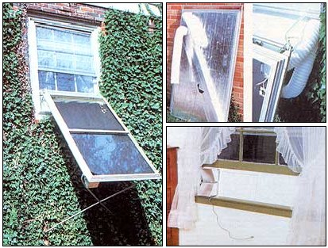

MOTHER EARTH NEWS STAFF
Clockwise from left: Because the collector is made from storm window frames, it'll match the exterior of almost any home. Foil- faced insulation board makes up the panel's rear surface. The collector's tubular framework hangs from a pair of shelf brackets. An adjustable insert makes for easy installation.